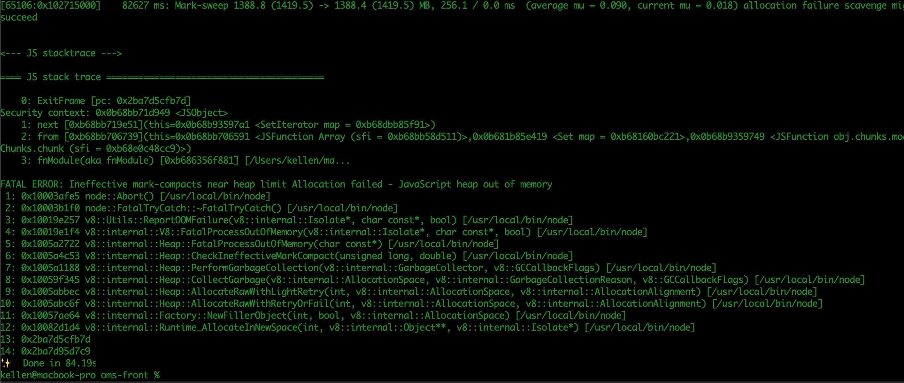
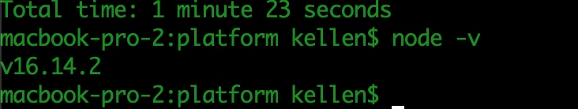

FATAL ERROR：Ineffective mark-compacts near heap limit Allocation failed - JavaScript heap out of memory
启动服务
yarn install
# 启动roadhog
yarn build:dll
# 启动应用
yarn start
编译失败异常

原因可能是nodejs版本过低，升级版本后在尝试

查看node版本
node -v
升级node版本
mac系统
以下命令在终端中可能会遇到权限问题，在开始位置输入sudo即可
npm cache clean -f
n模块是专门用来管理nodejs的版本，安装n模块
npm install -g n
// 把当前系统的 Node 更新成最新的 “稳定版本”
n stable
// 长期支持版
n lts
// 最新版
n latest
// 指定安装版本
n 10.14.2
n rm 10.14.2
node -v
window系统
node -v
where node
- 百度搜索
node+需要版本官网下载LTS版本nodejs。安装到之前的目录即可
// node 下载地址
https://nodejs.org/zh-cn/download/releases/